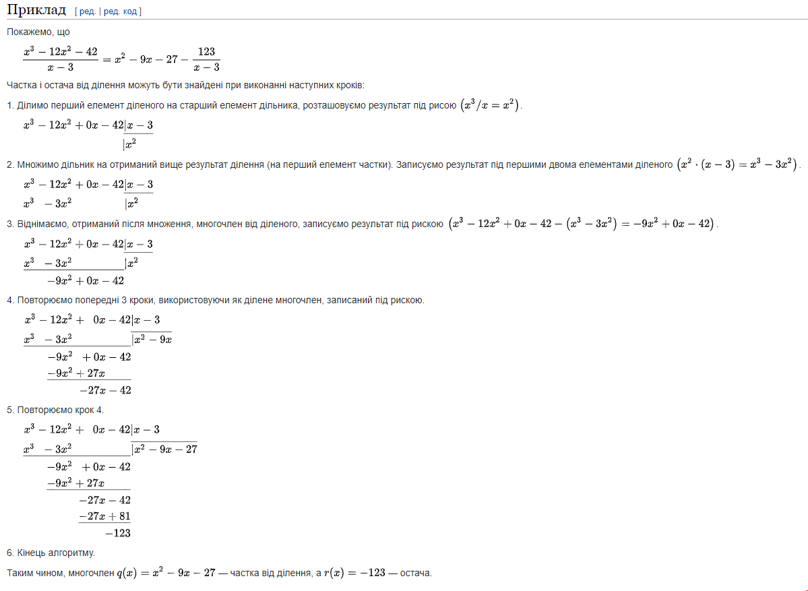

Назва та мета лабораторної роботи №6
Символьні дані, множини, узагальнені арифметичні операції
Завдання: написати процедури, що здійснюють операції над символьними даними, множинами та узагальненими сeлекторами
Варіант 16. Многочлени з однією змінною можна ділити один на одного, отримуючи частку і залишок. Для ділення розділимо старший член діленого на старший член дільника. В результаті вийде перший терм частки. Потім помножимо результат на дільник, віднімемо многочлен, що вийшов з діленого і, рекурсивно ділячи різницю на дільник, отримаємо решту частки. Зупиняємося, коли порядок дільника перевищить порядок ділимо, і оголошуємо залишком те, що тоді буде називатися діленим. Крім того, якщо коли-небудь ділене виявиться нулем, повертаємо нуль як і частку, і залишок. Розробити процедуру ділення многочленів
Алгоритм програми
Ділити многочлени в стовпчик можна алгоритмом, аналогічним до того, як діляться натуральні числа.
1. Спочатку треба перевірити, чи обидва многочлени впорядковані за спадними степенями тієї самої змінної; якщо ні, то впорядкувати їх, дописуючи також ті члени, яких немає (наприклад, замість 1-x^3 писатиметься -x^3+0x^2+1
2. «Підготувати» многочлени до ділення.
3. Поділити найстарший член діленого на найстарший член дільника.
4. Помножити отриманий одночлен на дільник.
5. Відняти отриманий многочлен від діленого.
6. Продовжувати так само, поки не отримаємо нуль або многочлен зі степенем меншим за степінь дільника. Це і є остача даного ділення.
Обґрунтування
Для виконання даної роботи було обрано мову програмування Lisp. Вона є однією з найстарішних та найвідоміших функціональних мов. Вона краще підходить для швидкого і простого вирішення математичних задач.
Код програми
Скрін-шот
Аналіз
Для перевірки результату було взято приклад з відомого ресурсу, де пошагово показано, як ділити поліноми. Також розглядалися граничні випадки.
Висновки
Lisp - гнучка мова, в якій дуже легко працювати зі списками. В даній роботі, було повторно опрацьовано тему символів та списків, вивчено базові функції мови Lisp.